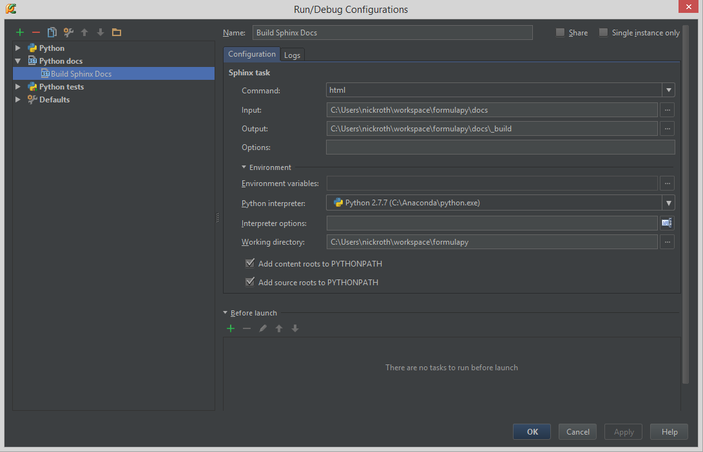

FormulaPy¶
A Formula 1 simulation in python.
Background¶
Developed after first concept introduced by reddit user whatthefat. He developed it in Matlab (download here), but a number of people wanted to see it in something a bit more powerful and available to others.
Approach¶
Architecture¶
I’ve had good luck in building a thin object-oriented interface as a thin wrapper around lower level data structures. To the user, this makes generating a simulation more intuitive, and abstracts the design from specific implementations. So, we build the simulation up using a number of reusable building blocks, then use that information to build the internal data structures for simulation. At the moment, the plan would be to use Pandas/Numpy/Numba for the internal calculations. I have been looking for an excuse to use Blaze (a higher level abstraction) as well, so that could be another option.
Project Structure¶
- docs: the folder where sphinx documentation generation will be performed
- tests: the folder where pytest-compatible tests will be collected
- formulapy.core: the fundamental and generic classes used to define specific models
- formulapy.models: holds a package for each season of models. This provides a user to build models for “what-if” scenarios, or to predict a given race’s performance
- formulapy.models.s2014: the first package to hold the current year’s models
- formulapy/data: will be the place to put any sql, nosql, or csv files
Surrogate Models¶
The use of modular components should allow incorporation of higher fidelity models over time as desired, without changes to the rest of the simulation. We can also take a high fidelity model, run it offline, then use something like a neural network (see ffnet) to surrogate the higher fidelity model.
Representing Uncertainty¶
It is important in simulations to represent the uncertainty in estimates. Therefor, instead of specifying a discrete value for a parameter, we should help the user represent the distribution around that value. The result should be not be a probability of success for each driver, but a distribution around a probability of success for each driver.
We might want to run the simulation far in advance, then update the statistics when given new information (Bayesian). So, given information on qualification, or even real time information of how the race is unfolding, we should be able to reduce the uncertainty of the prediction as we get more data.
Data Storage¶
For now, I’ll plan on using CSVs to store the data since there isn’t massive amounts of F1 data that I’m aware of, and ease of use for contributions.
Development¶
The goal will be to utilize tools/libraries that provide anyone the ability to contribute with no cost. The only thing I have identified that can cost money is PyCharm, but there is a free community version available. Spyder and IPython Notebook should be completely adequate.
Current Planned Requirements¶
- Base: Anaconda or Wakiri (web-based)
- IDE: PyCharm, IPython Notebook, Spyder (IPython and Spyder come with Anaconda)
- Data Structures: Pandas/Numpy
- Statistics: SciPy
- Testing: PyTest
- Docs: Sphinx, sphinx_rtd_theme
- Visualization: Seaborn (stats), Bokeh (interactive charts), Matplotlib (standard plots)
Pytest¶
Pytest can run python unittests and nose tests, and provide a way to quickly create tests from functions. All of the tests will be placed in this tests folder and are automatically found by pytest based on having the keyword “test” in the name of the python file and function. They can be separated out into different files as needed for organization.

Sphinx Documentation Generation¶
Only the source code will be included in the repository. _build, _static, and notebooks/.ipynb_checkpoints are excluded with .gitignore.
{kind=link}
Adding IPython Notebooks to Sphinx Docs¶
- Place IPython notebook in this directory
- Create a RST file with the same name as the notebook (convention, doesn’t have to be the same)
- Use the ”.. notebook:: thenameofyournotebook.ipynb” directive to tell Sphinx to execute and insert the notebook
- Reference thenameofyournotebook.rst file from some higher level Sphinx RST file